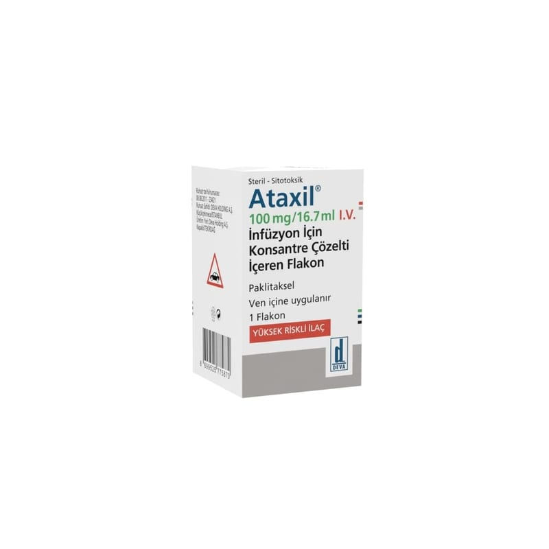

Ataxil 100 mg/16.7 ml IV İnfüzyon İçin Konsantre Çözelti İçeren Flakon, 1 Adet

Ne için kullanılır
KT · Bölüm 1ATAXİL, taksan olarak adlandırılan antikanser ilaç grubuna dahildir. Bu ilaçlar kanserli hücrelerin büyümesini engeller.
ATAXİL 100 mg/16.7 ml I.V. infüzyon için konsantre çözeltinin her mililitresi 6 mg paklitaksel içerir.
ATAXİL 100 mg/16.7 ml I.V. infüzyon için konsantre çözelti içeren flakon, berrak sarımsı viskoz bir çözeltidir ve cam flakonlarda ambalajlanmıştır.ATAXİL, yumurtalık ve meme kanseri tedavisinde, bir çeşit akciğer kanseri tedavisinde (Küçük Hücreli Olmayan Akciğer Kanseri) ve Kaposi sarkomu tedavisinde kullanılır.